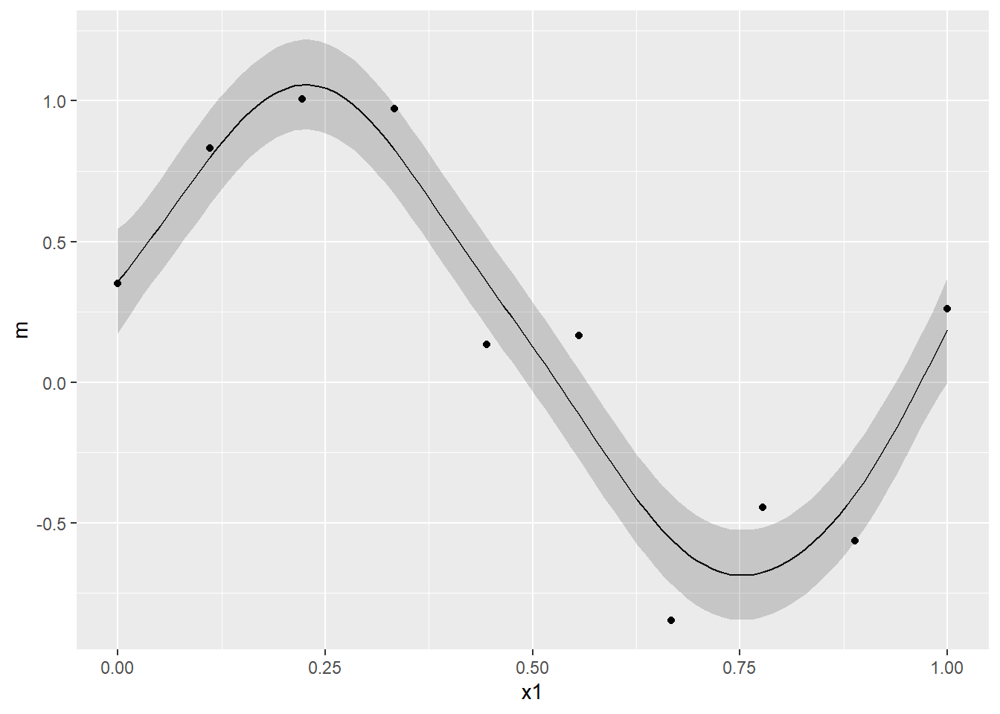

1. GPRとは
GRPとは簡単に言ってしまえば「ベイズ推定を用いた非線形回帰手法の１種」です。モデル自体は線形ですが、カーネルトリックを用いて入力変数を無限個非線形変換したものを説明変数として推定できるところが特徴です（カーネルになにを選択するかによります）。
GPRが想定しているのは、学習データとして入力データと教師データがそれぞれN個得られており、また入力データに関しては\(N+1\)個目のデータも得られている状況です。この状況から、\(N+1\)個目の教師データを予測します。
教師データにはノイズが含まれており、以下のような確率モデルに従います。
\[
t_{i} = y_{i} + \epsilon_{i}
\]
ここで、\(t_{i}\)は\(i\)番目の観測可能な教師データ（スカラー）、\(y_{i}\)は観測できない出力データ（スカラー）、\(\epsilon_{i}\)は測定誤差で正規分布\(N(0,\beta^{-1})\)に従います。\(y_{i}\)は以下のような確率モデルに従います。
\[
\displaystyle y_{i} = \textbf{w}^{T}\phi(x_{i})
\]
ここで、\(x_{i}\)はi番目の入力データベクトル、\(\phi(・)\)は非線形関数、 \(\textbf{w}^{T}\)は各入力データに対する重み係数（回帰係数）ベクトルです。非線形関数としては、\(\phi(x_{i}) = (x_{1,i}, x_{1,i}^{2},...,x_{1,i}x_{2,i},...)\)を想定しています（\(x_{1,i}\)は\(i\)番目の入力データ\(x_{i}\)の１番目の変数）。教師データの確率モデルから、\(i\)番目の出力データ\(y_{i}\)が得られたうえで\(t_{i}\)が得られる条件付確率は、
\[
p(t_{i}|y_{i}) = N(t_{i}|y_{i},\beta^{-1})
\]
となります。\(\displaystyle \textbf{t} = (t_{1},...,t_{n})^{T}\)、\(\displaystyle \textbf{y} = (y_{1},...,y_{n})^{T}\)とすると、上式を拡張することで
\[
\displaystyle p(\textbf{t}|\textbf{y}) = N(\textbf{t}|\textbf{y},\beta^{-1}\textbf{I}_{N})
\]
と書けます。また、事前分布として\(\textbf{w}\)の期待値は0、分散は全て\(\alpha\)と仮定します。\(\displaystyle \textbf{y}\)はガウス過程に従うと仮定します。ガウス過程とは、\(\displaystyle \textbf{y}\)の同時分布が多変量ガウス分布に従うもののことです。コードで書くと以下のようになります。
# Define Kernel function
Kernel_Mat <- function(X,sigma,beta){
N <- NROW(X)
K <- matrix(0,N,N)
for (i in 1:N) {
for (k in 1:N) {
if(i==k) kdelta = 1 else kdelta = 0
K[i,k] <- K[k,i] <- exp(-t(X[i,]-X[k,])%*%(X[i,]-X[k,])/(2*sigma^2)) + beta^{-1}*kdelta
}
}
return(K)
}
N <- 10 # max value of X
M <- 1000 # sample size
X <- matrix(seq(1,N,length=M),M,1) # create X
testK <- Kernel_Mat(X,0.5,1e+18) # calc kernel matrix
library(MASS)
P <- 6 # num of sample path
Y <- matrix(0,M,P) # define Y
for(i in 1:P){
Y[,i] <- mvrnorm(n=1,rep(0,M),testK) # sample Y
}
# Plot
matplot(x=X,y=Y,type = "l",lwd = 2)

Kernel_Matについては後述しますが、\(\displaystyle \textbf{y}\)の各要素\(\displaystyle y_{i} = \textbf{w}^{T}\phi(x_{i})\)の間の共分散行列\(K\)を入力\(x\)からカーネル法を用いて計算しています。そして、この\(K\)と平均0から、多変量正規乱数を6系列生成し、それをプロットしています。
これらの系列は共分散行列から計算されるので、各要素の共分散が正に大きくなればなるほど同じ値をとりやすくなるようモデリングされていることになります。また、グラフを見ればわかるように非常になめらかなグラフが生成されており、かつ非常に柔軟な関数を表現できていることがわかります。コードでは計算コストの関係上、入力を0から10に限定して1000個の入力点をサンプルし、作図を行っていますが、原理的には\(x\)は実数空間で定義されるものであるので、\(p(\textbf{y})\)は無限次元の多変量正規分布に従います。
以上のように、\(\displaystyle \textbf{y}\)はガウス過程に従うと仮定するので同時確率\(p(\textbf{y})\)は平均0、分散共分散行列が\(K\)の多変量正規分布\(N(\textbf{y}|0,K)\)に従います。ここで、\(K\)の各要素\(K_{i,j}\)は、
\[
\begin{eqnarray}
K_{i,j} &=& cov[y_{i},y_{j}] = cov[\textbf{w}\phi(x_{i}),\textbf{w}\phi(x_{j})] \\
&=&\phi(x_{i})\phi(x_{j})cov[\textbf{w},\textbf{w}]=\phi(x_{i})\phi(x_{j})\alpha
\end{eqnarray}
\]
です。ここで、\(\phi(x_{i})\phi(x_{j})\alpha\)は\(\phi(x_{i})\)の次元が大きくなればなるほど計算量が多くなります（つまり、非線形変換をかければかけるほど計算が終わらない）。しかし、カーネル関数\(k(x,x')\)を用いると、計算量は高々入力データ\(x_{i},x_{j}\)のサンプルサイズの次元になるので、計算がしやすくなります。カーネル関数を用いて\(K_{i,j} = k(x_{i},x_{j})\)となります。カーネル関数としてはいくつか種類がありますが、以下のガウスカーネルがよく使用されます。
\[
k(x,x') = a \exp(-b(x-x')^{2})
\]
\(\displaystyle \textbf{y}\)の同時確率が定義できたので、\(\displaystyle \textbf{t}\)の同時確率を求めることができます。
\[
\begin{eqnarray}
\displaystyle p(\textbf{t}) &=& \int p(\textbf{t}|\textbf{y})p(\textbf{y}) d\textbf{y} \\
\displaystyle &=& \int N(\textbf{t}|\textbf{y},\beta^{-1}\textbf{I}_{N})N(\textbf{y}|0,K)d\textbf{y} \\
&=& N(\textbf{y}|0,\textbf{C}_{N})
\end{eqnarray}
\]
ここで、\(\textbf{C}_{N} = K + \beta^{-1}\textbf{I}_{N}\)です。なお、最後の式展開は正規分布の再生性を利用しています（証明は正規分布の積率母関数から容易に導けます）。要は、両者は独立なので共分散は2つの分布の共分散の和となると言っているだけです。個人的には、\(p(\textbf{y})\)が先ほど説明したガウス過程の事前分布であり、\(p(\textbf{t}|\textbf{y})\)が尤度関数で、\(p(\textbf{t})\)は事後分布をというようなイメージです。事前分布\(p(\textbf{y})\)は制約の緩い分布でなめらかであることのみが唯一の制約です。
\(N\)個の観測可能な教師データ\(\textbf{t}\)と\(t_{N+1}\)の同時確率は、
\[
p(\textbf{t},t_{N+1}) = N(\textbf{t},t_{N+1}|0,\textbf{C}_{N+1})
\]
ここで、\(\textbf{C}_{N+1}\)は、
\[
\textbf{C}_{N+1} = \left(
\begin{array}{cccc}
\textbf{C}_{N} & \textbf{k} \\
\textbf{k}^{T} & c \\
\end{array}
\right)
\]
です。ここで、\(\textbf{k} = (k(x_{1},x_{N+1}),...,k(x_{N},x_{N+1}))\)、\(c = k(x_{N+1},x_{N+1})\)です。\(\textbf{t}\)と\(t_{N+1}\)の同時分布から条件付分布\(p(t_{N+1}|\textbf{t})\)を求めることができます。
\[
p(t_{N+1}|\textbf{t}) = N(t_{N+1}|\textbf{k}^{T}\textbf{C}_{N+1}^{-1}\textbf{t},c-\textbf{k}^{T}\textbf{C}_{N+1}^{-1}\textbf{k})
\]
条件付分布の計算においては、条件付多変量正規分布の性質を利用しています。上式を見ればわかるように、条件付分布\(p(t_{N+1}|\textbf{t})\)は\(N+1\)個の入力データ、\(N\)個の教師データ、カーネル関数のパラメータ\(a,b\)が既知であれば計算可能となっていますので、任意の点を入力データとして与えてやれば、元のData Generating Processを近似することが可能になります。GPRの良いところは上で定義した確率モデル\(\displaystyle y_{i} = \textbf{w}^{T}\phi(x_{i})\)を直接推定しなくても予測値が得られるところです。確率モデルには\(\phi(x_{i})\)があり、非線形変換により入力データを高次元ベクトルへ変換しています。よって、次元が高くなればなるほど\(\phi(x_{i})\phi(x_{j})\alpha\)の計算量は大きくなっていきますが、GPRではカーネルトリックを用いているので高々入力データベクトルのサンプルサイズの次元の計算量で事足りることになります。
2. GPRの実装
とりあえずここまでをRで実装してみましょう。PRMLのテストデータで実装しているものがあったので、それをベースにいじってみました。
library(ggplot2)
library(grid)
# 1.Gaussian Process Regression
# PRML's synthetic data set
curve_fitting <- data.frame(
x=c(0.000000,0.111111,0.222222,0.333333,0.444444,0.555556,0.666667,0.777778,0.888889,1.000000),
t=c(0.349486,0.830839,1.007332,0.971507,0.133066,0.166823,-0.848307,-0.445686,-0.563567,0.261502))
f <- function(beta, sigma, xmin, xmax, input, train) {
kernel <- function(x1, x2) exp(-(x1-x2)^2/(2*sigma^2)); # define Kernel function
K <- outer(input, input, kernel); # calc gram matrix
C_N <- K + diag(length(input))/beta
m <- function(x) (outer(x, input, kernel) %*% solve(C_N) %*% train) # coditiona mean
m_sig <- function(x)(kernel(x,x) - diag(outer(x, input, kernel) %*% solve(C_N) %*% t(outer(x, input, kernel)))) #conditional variance
x <- seq(xmin,xmax,length=100)
output <- ggplot(data.frame(x1=x,m=m(x),sig1=m(x)+1.96*sqrt(m_sig(x)),sig2=m(x)-1.96*sqrt(m_sig(x)),
tx=input,ty=train),
aes(x=x1,y=m)) +
geom_line() +
geom_ribbon(aes(ymin=sig1,ymax=sig2),alpha=0.2) +
geom_point(aes(x=tx,y=ty))
return(output)
}
grid.newpage() # make a palet
pushViewport(viewport(layout=grid.layout(2, 2))) # divide the palet into 2 by 2
print(f(100,0.1,0,1,curve_fitting$x,curve_fitting$t), vp=viewport(layout.pos.row=1, layout.pos.col=1))
print(f(4,0.10,0,1,curve_fitting$x,curve_fitting$t), vp=viewport(layout.pos.row=1, layout.pos.col=2))
print(f(25,0.30,0,1,curve_fitting$x,curve_fitting$t), vp=viewport(layout.pos.row=2, layout.pos.col=1))
print(f(25,0.030,0,1,curve_fitting$x,curve_fitting$t), vp=viewport(layout.pos.row=2, layout.pos.col=2))

\(\beta^{-1}\)は測定誤差を表しています。\(\beta\)が大きい（つまり、測定誤差が小さい）とすでに得られているデータとの誤差が少なくなるように予測値をはじき出すので、over fitting しやすくなります。上図の左上がそうなっています。左上は\(\beta=400\)で、現時点で得られているデータに過度にfitしていることがわかります。逆に\(\beta\)が小さいと教師データとの誤差を無視するように予測値をはじき出しますが、汎化性能は向上するかもしれません。右上の図がそれです。\(\beta=4\)で、得られているデータ点を平均はほとんど通っていません。\(b\)は現時点で得られているデータが周りに及ぼす影響の広さを表しています。\(b\)が小さいと、隣接する点が互いに強く影響を及ぼし合うため、精度は下がるが汎化性能は上がるかもしれません。逆に、\(b\)が大きいと、個々の点にのみフィットする不自然な結果になります。これは右下の図になります（\(b=\frac{1}{0.03},\beta=25\)）。御覧の通り、\(\beta\)が大きいのでoverfitting気味であり、なおかつ\(b\)も大きいので個々の点のみにfitし、無茶苦茶なグラフになっています。左下のグラフが最もよさそうです。\(b=\frac{1}{0.3},\beta=2\)となっています。試しに、このグラフのx区間を[0,2]へ伸ばしてみましょう。すると、以下のようなグラフがかけます。
grid.newpage() # make a palet
pushViewport(viewport(layout=grid.layout(2, 2))) # divide the palet into 2 by 2
print(f(100,0.1,0,2,curve_fitting$x,curve_fitting$t), vp=viewport(layout.pos.row=1, layout.pos.col=1))
print(f(4,0.10,0,2,curve_fitting$x,curve_fitting$t), vp=viewport(layout.pos.row=1, layout.pos.col=2))
print(f(25,0.30,0,2,curve_fitting$x,curve_fitting$t), vp=viewport(layout.pos.row=2, layout.pos.col=1))
print(f(25,0.030,0,2,curve_fitting$x,curve_fitting$t), vp=viewport(layout.pos.row=2, layout.pos.col=2))

これを見ればわかるように、左下以外のグラフはすぐに95%信頼区間のバンドが広がり、データ点がないところではまったく使い物にならないことがわかります。一方、左下のグラフは1.3~1.4ぐらいまではそこそこのバンドがかけており、我々が直感的に理解する関数とも整合的な点を平均値が通っているように思えます。また、観測可能なデータ点から離れすぎるとパラメータに何を与えようと平均０、分散１の正規分布になることもわかるがわかります。
さて、このようにパラメータの値に応じて、アウトサンプルの予測精度が異なることを示したわけですが、ここで問題となるのはこれらハイパーパラメータをどのようにして推計するかです。これは対数尤度関数\(\ln p(\textbf{t}|a,b)\)を最大にするハイパーパラメータを勾配法により求めます((\(\beta\)は少しタイプが異なるようで、発展的な議論では他のチューニング方法をとる模様。まだ、そのレベルにはいけていないのでここではカリブレートすることにします。))。\(p(\textbf{t}) = N(\textbf{y}|0,\textbf{C}_{N})\)なので、対数尤度関数は
\[
\displaystyle \ln p(\textbf{t}|a,b,\beta) = -\frac{1}{2}\ln|\textbf{C}_{N}| - \frac{N}{2}\ln(2\pi) - \frac{1}{2}\textbf{t}^{T}\textbf{C}_{N}^{-1}\textbf{k}
\]
となります。あとは、これをパラメータで微分し、得られた連立方程式を解くことで最尤推定量が得られます。ではまず導関数を導出してみます。
\[
\displaystyle \frac{\partial}{\partial \theta_{i}} \ln p(\textbf{t}|\theta) = -\frac{1}{2}Tr(\textbf{C}_{N}^{-1}\frac{\partial \textbf{C}_{N}}{\partial \theta_{i}}) + \frac{1}{2}\textbf{t}^{T}\textbf{C}_{N}^{-1}
\frac{\partial\textbf{C}_{N}}{\partial\theta_{i}}\textbf{C}_{N}^{-1}\textbf{t}
\]
ここで、\(\theta\)はパラメータセットで、\(\theta_{i}\)は\(i\)番目のパラメータを表しています。この導関数が理解できない方はこちらの補論にある(C.21)式と(C.22)式をご覧になると良いと思います。今回はガウスカーネルを用いているため、
\[
\displaystyle \frac{\partial k(x,x')}{\partial a} = \exp(-b(x-x')^{2}) \\
\displaystyle \frac{\partial k(x,x')}{\partial b} = -a(x-x')^{2}\exp(-b(x-x')^{2})
\]
を上式に代入すれば良いだけです。ただ、今回は勾配法により最適なパラメータを求めます。以下、実装のコードです（かなり迷走しています）。
g <- function(xmin, xmax, input, train){
# initial value
beta = 100
b = 1
a = 1
learning_rate = 0.1
itermax <- 1000
if (class(input) == "numeric"){
N <- length(input)
} else
{
N <- NROW(input)
}
kernel <- function(x1, x2) a*exp(-0.5*b*(x1-x2)^2); # define kernel
derivative_a <- function(x1,x2) exp(-0.5*b*(x1-x2)^2)
derivative_b <- function(x1,x2) -0.5*a*(x1-x2)^2*exp(-0.5*b*(x1-x2)^2)
dloglik_a <- function(C_N,y,x1,x2) {
-sum(diag(solve(C_N)%*%outer(input, input, derivative_a)))+t(y)%*%solve(C_N)%*%outer(input, input, derivative_a)%*%solve(C_N)%*%y
}
dloglik_b <- function(C_N,y,x1,x2) {
-sum(diag(solve(C_N)%*%outer(input, input, derivative_b)))+t(y)%*%solve(C_N)%*%outer(input, input, derivative_b)%*%solve(C_N)%*%y
}
# loglikelihood function
likelihood <- function(b,a,x,y){
kernel <- function(x1, x2) a*exp(-0.5*b*(x1-x2)^2)
K <- outer(x, x, kernel)
C_N <- K + diag(N)/beta
itermax <- 1000
l <- -1/2*log(det(C_N)) - N/2*(2*pi) - 1/2*t(y)%*%solve(C_N)%*%y
return(l)
}
K <- outer(input, input, kernel)
C_N <- K + diag(N)/beta
for (i in 1:itermax){
kernel <- function(x1, x2) a*exp(-b*(x1-x2)^2)
derivative_b <- function(x1,x2) -0.5*a*(x1-x2)^2*exp(-0.5*b*(x1-x2)^2)
dloglik_b <- function(C_N,y,x1,x2) {
-sum(diag(solve(C_N)%*%outer(input, input, derivative_b)))+t(y)%*%solve(C_N)%*%outer(input, input, derivative_b)%*%solve(C_N)%*%y
}
K <- outer(input, input, kernel) # calc gram matrix
C_N <- K + diag(N)/beta
l <- 0
if(abs(l-likelihood(b,a,input,train))<0.0001&i>2){
break
}else{
a <- as.numeric(a + learning_rate*dloglik_a(C_N,train,input,input))
b <- as.numeric(b + learning_rate*dloglik_b(C_N,train,input,input))
}
l <- likelihood(b,a,input,train)
}
K <- outer(input, input, kernel)
C_N <- K + diag(length(input))/beta
m <- function(x) (outer(x, input, kernel) %*% solve(C_N) %*% train)
m_sig <- function(x)(kernel(x,x) - diag(outer(x, input, kernel) %*% solve(C_N) %*% t(outer(x, input, kernel))))
x <- seq(xmin,xmax,length=100)
output <- ggplot(data.frame(x1=x,m=m(x),sig1=m(x)+1.96*sqrt(m_sig(x)),sig2=m(x)-1.96*sqrt(m_sig(x)),
tx=input,ty=train),
aes(x=x1,y=m)) +
geom_line() +
geom_ribbon(aes(ymin=sig1,ymax=sig2),alpha=0.2) +
geom_point(aes(x=tx,y=ty))
return(output)
}
print(g(0,1,curve_fitting$x,curve_fitting$t), vp=viewport(layout.pos.row=1, layout.pos.col=1))

たしかに、良さそうな感じがします（笑）
とりあえず、今日はここまで。